注意力和增强循环神经网络
Chris Olah
Google Brain
Shan Carter
Google Brain
9月8日
2016
引用：
Olah & Carter, 2016
循环神经网络是深度学习的核心技术之一，它让神经网络能够处理文本、音频和视频等序列数据。它们可以把一个序列提炼成高层理解、为序列添加标注，甚至从零开始生成新的序列！
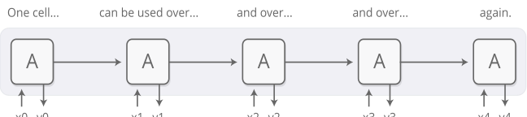
基础的 RNN 设计在处理较长序列时会遇到困难，但一种特殊的变体——“长短期记忆”网络 [1]——甚至能够应对这类序列。这类模型已被证明非常强大，在机器翻译、语音识别、图像描述等众多任务中取得了惊人成果。因此，循环神经网络在过去几年里得到了极为广泛的应用。
随着这一趋势，我们看到越来越多尝试为 RNN 增加新特性的工作。其中四个方向尤其令人兴奋：
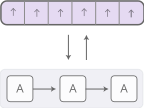
单独来看，这些技术都是 RNN 的有力扩展，但真正引人注目的是它们可以相互组合，看起来只是更广阔设计空间中的几个点。而且，它们都依赖于同一个底层技巧——即所谓的注意力机制——才能运作。
我们猜测，这些“增强循环神经网络”将在未来几年里对扩展深度学习的能力发挥重要作用。
Neural Turing Machines
Neural Turing Machines [2] 将 RNN 与外部记忆库结合。由于向量是神经网络的天然语言，记忆就是一个向量数组：
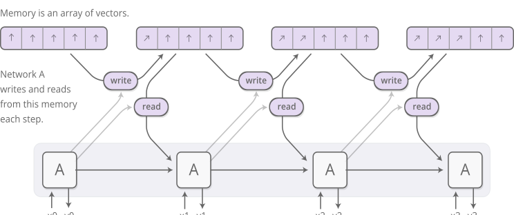
但读写操作如何实现呢？难点在于我们希望这些操作是可微分的。特别是，我们希望读写的位置也能参与微分，以便模型学会在哪里读写。这很棘手，因为记忆地址本质上似乎是离散的。NTM 采取了一个非常巧妙的解决方案：每一步，它都在所有位置进行读写，只是程度不同。
举个例子，我们重点看读操作。RNN 不是指定单一位置，而是输出一个“注意力分布”，描述我们如何把关注度分散到不同的记忆位置。因此，读操作的结果是一个加权求和。
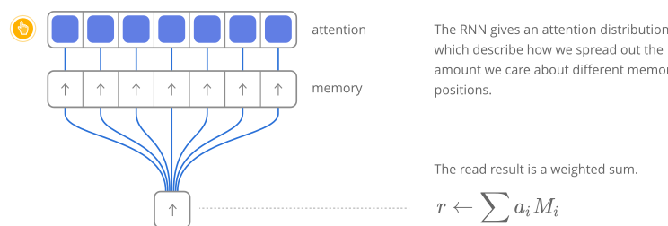
类似地，我们一次性在所有位置写入，只是程度不同。同样，一个注意力分布描述了我们在每个位置写入的多少。我们通过让记忆中某个位置的新值成为旧记忆内容与写入值的凸组合来实现，凸组合的比例由注意力权重决定。
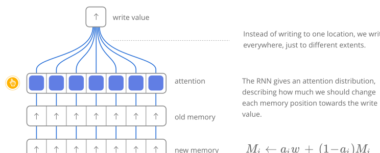
但 NTM 如何决定要把注意力集中在记忆的哪些位置呢？它们实际上结合使用了两种不同方法：基于内容的注意力和基于位置的注意力。基于内容的注意力允许 NTM 在记忆中搜索，并聚焦于匹配它们正在寻找的内容的位置；而基于位置的注意力允许在记忆中进行相对移动，使 NTM 能够循环。
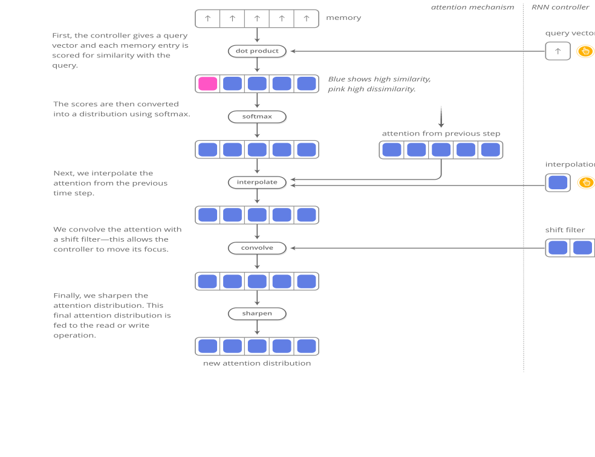
这种读写能力让 NTM 能够执行许多之前神经网络无法完成的简单算法。例如，它们可以学会把长序列存入记忆，然后循环遍历它，反复重复输出。在这个过程中，我们可以观察它们读写的位置，从而更好地理解它们在做什么：
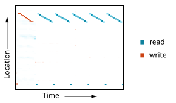
它们还能学会模仿查找表，甚至学会对数字排序（虽然有点作弊）！另一方面，它们仍然无法完成许多基本操作，比如加法或乘法。
自原始 NTM 论文发表以来，已有许多令人兴奋的论文探索了类似方向。Neural GPU [4] 克服了 NTM 无法进行加法和乘法的局限。Zaremba & Sutskever [5] 使用强化学习而非原始的可微分读写来训练 NTM。Neural Random Access Machines [6] 则基于指针工作。还有一些论文探索了可微分数据结构，例如栈和队列 [7, 8]。而 Memory Networks [9, 10] 是解决类似问题的另一种方法。
从某种客观意义上说，这些模型能执行的许多任务——例如学会如何做加法——其实并不特别困难。传统的程序合成领域能轻松超越它们。但神经网络擅长许多其他事情，而 Neural Turing Machine 之类的模型似乎打破了它们能力上一个非常深刻的限制。
代码
目前有多个这些模型的开源实现。Neural Turing Machine 的开源实现包括 Taehoon Kim 的（TensorFlow）、Shawn Tan 的（Theano）、Fumin 的（Go）、Kai Sheng Tai 的（Torch）以及 Snip 的（Lasagne）。Neural GPU 论文的代码已开源并放入 TensorFlow Models 仓库。Memory Networks 的开源实现包括 Facebook 的（Torch/Matlab）、YerevaNN 的（Theano）以及 Taehoon Kim 的（TensorFlow）。
注意力接口
当我翻译一个句子时，我会特别注意当前正在翻译的那个词。当我转录一段录音时，我会仔细聆听正在写下的那一段。如果你让我描述我现在坐的房间，我会在描述每一个物体时扫视它。
神经网络可以使用注意力实现同样的行为，聚焦于给定信息的一个子集。例如，一个 RNN 可以关注另一个 RNN 的输出。在每一步，它会聚焦于另一个 RNN 的不同位置。
我们希望注意力是可微分的，以便学会在哪里聚焦。为此，我们使用 Neural Turing Machines 所用的同一个技巧：对所有地方都聚焦，只是程度不同。
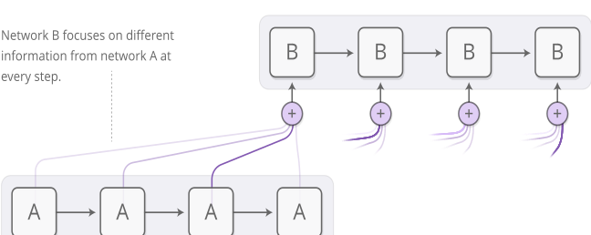
注意力分布通常通过基于内容的注意力生成。正在关注的 RNN 生成一个查询，描述它想聚焦什么。每个条目与查询做点积得到一个分数，描述它与查询的匹配程度。这些分数被送入 softmax 以生成注意力分布。
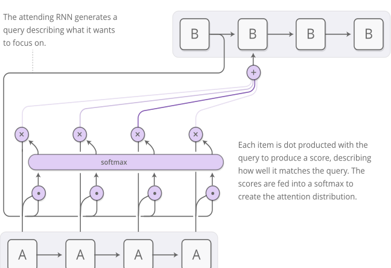
RNN 之间注意力的一种用途是机器翻译 [11]。传统的序列到序列模型必须把整个输入压缩成单个向量，然后再把它展开。注意力通过允许处理输入的 RNN 传递它看到的每个单词的信息，然后让生成输出的 RNN 在相关单词变得重要时聚焦于它们，从而避免了这个问题。

这种 RNN 之间的注意力还有许多其他应用。它可用于语音识别 [12]，让一个 RNN 处理音频，然后让另一个 RNN 略读它，在生成转录文本时聚焦于相关部分。
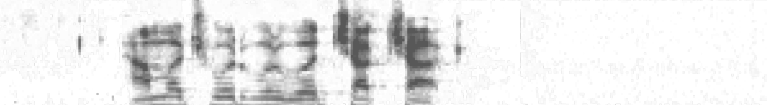
这类注意力的其他用途包括文本解析 [13]——它允许模型在生成解析树时快速扫视单词，以及对话建模 [14]——它让模型在生成回复时聚焦于之前对话的内容。
注意力也可以用在卷积神经网络和 RNN 的接口上。这允许 RNN 在每一步查看图像的不同位置。这种注意力的一种流行用途是图像描述。首先，一个卷积网络处理图像，提取高层特征。然后 RNN 运行，生成图像的描述。在生成描述中的每个单词时，RNN 会聚焦于卷积网络对图像相关部分的理解。我们可以明确地将其可视化：
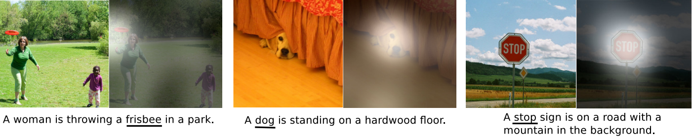
更广泛地说，只要你想与输出具有重复结构的神经网络交互，就可以使用注意力接口。
注意力接口已被证明是一种极其通用且强大的技术，正在变得越来越普及。
自适应计算时间
标准 RNN 在每个时间步执行相同数量的计算。这看起来不太直观。显然，当事情变难时应该思考得更多才对吧？这也把 RNN 限制在对长度为 n 的列表只能做 O(n) 次操作。
自适应计算时间 [15] 是一种让 RNN 在每一步执行不同计算量的方法。其核心思想很简单：允许 RNN 对每个时间步执行多次计算步骤。
为了让网络学会要执行多少步，我们希望步数是可微分的。我们使用之前相同的技巧实现这一点：不是决定运行离散数量的步数，而是对要运行的步数有一个注意力分布。输出是每个步骤输出的加权组合。
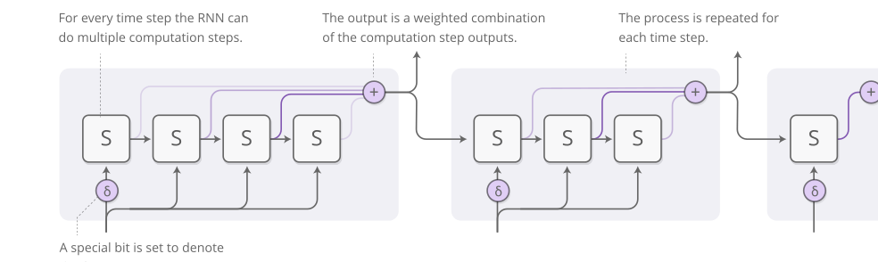
还有一些细节在上面的图中被省略了。下面是一个包含三个计算步骤的时间步的完整示意图。
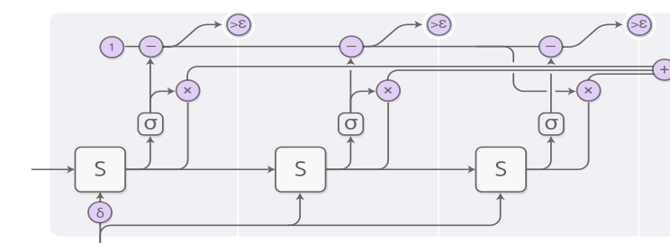
这有点复杂，我们一步步来看。从高层来看，我们仍然在运行 RNN 并输出各个状态的加权组合：
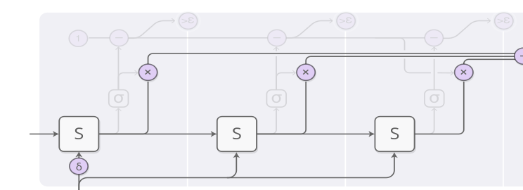
每一步的权重由一个“停止神经元”决定。它是一个 sigmoid 神经元，观察 RNN 的状态并给出停止权重，我们可以将其视为在该步应该停止的概率。
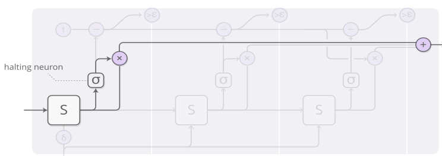
我们对停止权重的总预算为 1，因此我们沿着顶部跟踪这个预算。当它小于 epsilon 时，我们就停止。
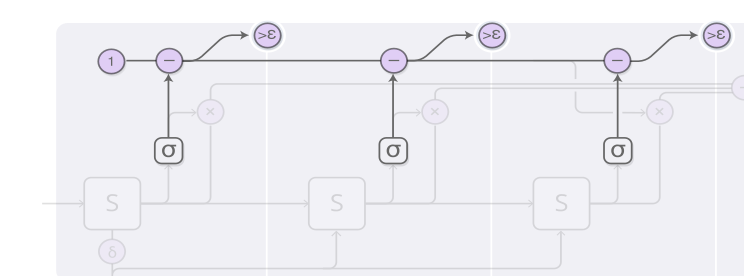
当我们停止时，可能还有一些剩余的停止预算，因为我们是在它小于 epsilon 时停止的。应该怎么处理它呢？从技术上讲，它会被分配给后续步骤，但我们不想计算那些，所以我们把它归到最后一步。
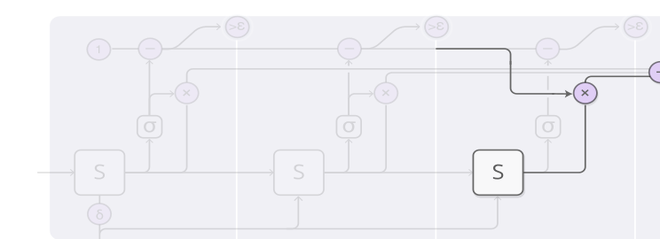
在训练自适应计算时间模型时，我们会在损失函数中加入一个“思考代价”项。这会惩罚模型使用的计算量。你把这个项设置得越大，模型就越会在性能和减少计算时间之间做出权衡。
自适应计算时间是一个非常新的想法，但我们相信它以及类似的想法将会非常重要。
代码
目前唯一一个自适应计算时间的开源实现似乎是 Mark Neumann 的（TensorFlow）。
Neural Programmer
神经网络在许多任务上表现出色，但也难以完成一些在常规计算中非常简单的事情，比如算术。如果有一种方法能将神经网络与普通编程融合，兼得两者之长，那就太好了。
Neural Programmer [16] 是实现这一目标的一种方法。它学会为了解决问题而创建程序。事实上，它无需正确程序的示例就能学会生成这样的程序。它把生成程序作为达成某个任务目标的手段。
论文中的实际模型通过生成类似 SQL 的程序来查询表格，从而回答关于表格的问题。不过这里有不少细节会让它变得有点复杂，所以我们先设想一个稍简单的模型：给定一个算术表达式，生成一个程序来求值它。
生成的程序是一系列操作。每个操作被定义为对过去操作的输出进行运算。因此，一个操作可能是“把两步前的操作输出和一步前的操作输出相加”。它更像 Unix 管道，而不是带变量赋值和读取的程序。
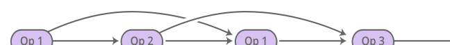
程序由一个控制器 RNN 一步一步生成。在每一步，控制器 RNN 输出下一个操作应该是什么的概率分布。例如，我们可能非常确定第一步要执行加法，然后在第二步很难决定是乘还是除，以此类推……
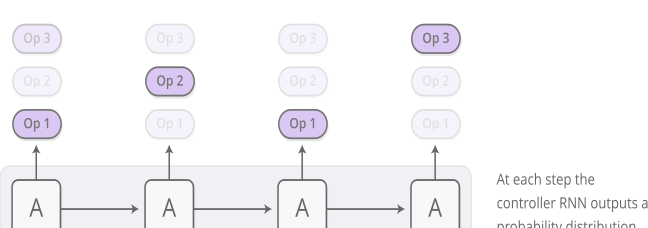
得到的操作分布现在可以被求值。我们不是在每一步只运行一个操作，而是使用通常的注意力技巧——运行所有操作，然后用我们运行该操作的概率作为权重，对输出进行加权平均。
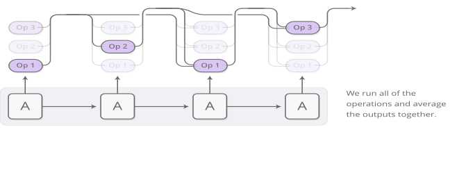
只要我们能通过这些操作定义导数，程序的输出就相对于概率是可微分的。然后我们可以定义一个损失，并训练神经网络去生成能给出正确答案的程序。这样，Neural Programmer 无需良好程序的示例就能学会生成程序。唯一的监督信号就是程序应该产生的答案。
这是 Neural Programmer 的核心思想，但论文中的版本是回答关于表格的问题，而不是算术表达式。这里还有几个巧妙的额外技巧：
Neural Programmer 并不是让神经网络生成程序的唯一方法。另一种优美的方法是 Neural Programmer-Interpreter [18]，它能完成许多非常有趣的任务，但需要以正确程序形式提供的监督。
我们认为，这个连接传统编程与神经网络的广阔领域极其重要。虽然 Neural Programmer 显然不是最终解决方案，但我们认为从中可以学到许多重要的经验。
代码
用于问答的 Neural Programmer 较新版本已被作者开源，并作为 TensorFlow Model 提供。还有一个由 Ken Morishita 实现的 Neural Programmer-Interpreter（Keras）。
大局观
从某种意义上说，拥有纸笔的人类比没有纸笔的人类聪明得多。掌握数学符号的人类能解决他们原本无法解决的问题。有了计算机，我们就能完成原本远超我们能力的惊人壮举。
总的来说，许多有趣的智能形式似乎都是人类创造性的启发式直觉与某种更清晰、更严谨的媒介（如语言或方程）之间的互动。有时，这个媒介是真实存在的物体，它为我们存储信息、防止我们犯错，或承担繁重的计算。在其他情况下，这个媒介是我们头脑中的一个模型，我们对其进行操纵。无论哪种方式，它似乎都是智能最根本的组成部分。
机器学习最近的结果开始有了这种味道，将神经网络的直觉与其他东西结合起来。一种方法可以称为“启发式搜索”。例如 AlphaGo [19] 有一个围棋运作的模型，并由神经网络的直觉引导探索棋局可能的走向。类似地，DeepMath [20] 使用神经网络作为操纵数学表达式的直觉。我们本文讨论的“增强 RNN”则是另一种方法，我们将 RNN 与精心设计的媒介连接起来，以扩展它们的一般能力。
与媒介交互自然涉及一系列“采取行动、观察、再采取更多行动”的序列。这带来了一个重大挑战：我们如何学会该采取哪些行动？这听起来像是一个强化学习问题，我们当然可以采用那种方法。但强化学习文献其实在攻击这个问题最难的版本，其解决方案很难使用。而注意力机制的美妙之处在于，它提供了一个更简单的出路：对所有行动进行不同程度的局部采用。这之所以可行，是因为我们可以设计像 NTM 记忆这样的媒介，使其允许分数行动并且是可微分的。强化学习让我们走一条单独的路径，然后尝试从中学习；而注意力则在岔路口走向每个方向，然后再把路径合并回来。
注意力机制的一个主要弱点是，我们必须在每一步都采取每一个“行动”。这会导致计算代价随着诸如增加 Neural Turing Machine 记忆量等操作而线性增长。你可以设想的一种做法是让注意力变得稀疏，这样你就只需触及部分记忆。然而，这仍然具有挑战性，因为你可能希望让注意力依赖于记忆的内容，而天真地这样做会迫使你查看每个记忆。我们已经看到一些初步尝试解决这个问题，例如 [21]，但似乎还有很多工作要做。如果我们真的能让这种亚线性时间的注意力工作起来，那将非常强大！
增强循环神经网络及其背后的注意力技术令人无比兴奋。我们期待看到接下来会发生什么！